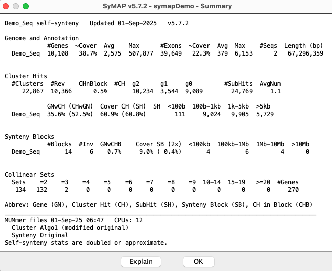

|
Contents:
The demo was created from real data >15 years ago, and is VERY obsolete - it is strictly for demonstration.
Click any image to view an enlarged image.
Demo-Seq to Demo-Seq2
The following show the summary when the Synteny Clustering was run with Algo1 versus Algo2.
Demo-Seq has been run against itself, resulting in the Dot Plot shown on the lower right.
|
There are a few off-diagonal blocks, which may indicate repetitiveness (but these blocks are probably
too small to be meaningful).
Click to view summary

| 
|
The Demo-draft was run against the Demo-Seq2 with its order_against parameter set to Demo_Seq2.
The following 4 sections show the contents of the logs/<proj-to-proj>/symap.log file:
The first two lines of each is:
>>> SyMAP v5.6.8 (1-June-25) Running Java v20.0.1 on 24-May-25 15:28:45 <<<
>>> demo_seq to demo_seq2 Verbose (or !Verbose)
The parameters selected are:
Cluster Algo1 (modified original) or Cluster Algo2 (exon-intron)
Number pseudo
Synteny
Same orient
The last 6 lines are the Summary (not shown).
Start calculating cluster hits for demo_seq and demo_seq2
Alignment files in data/seq_results/demo_seq_to_demo_seq2/align/
Scan files to create candidate genes from hits
20,005 Total scanned hits
Scan files to cluster and filter hits
11,000 Total cluster hits
6,841 Filtered hits to save
Finding Collinear sets
717 Collinear sets
Assign pseudo genes
703 Pseudo Demo_Seq 478 Pseudo Demo_Seq2
Finish clustering hits 8s
Finding synteny for demo_seq and demo_seq2
23 Blocks Orient: 13 Same 10 Diff
Finish Synteny 3s
Start calculating cluster hits for demo_seq and demo_seq2
Alignment files in data/seq_results/demo_seq_to_demo_seq2/align/
Loading annotations
10,108 demo_seq genes
10,137 demo_seq2 genes
Scan files to create candidate genes from hits
3,596 scanned PROMER demo_seq_f2.demo_seq2_f2.mum
2,423 scanned PROMER demo_seq_f2.demo_seq2_f1.mum
11,635 scanned PROMER demo_seq_f1.demo_seq2_f1.mum
2,351 scanned PROMER demo_seq_f1.demo_seq2_f2.mum
20,005 Total scanned hits
Scan files to cluster and filter hits
2,296 clustered demo_seq_f2.demo_seq2_f2.mum
1,834 clustered demo_seq_f2.demo_seq2_f1.mum
5,089 clustered demo_seq_f1.demo_seq2_f1.mum
1,782 clustered demo_seq_f1.demo_seq2_f2.mum
11,001 Total cluster hits
Filter hits
8,557 for demo_seq
7,388 for demo_seq2
6,842 Filtered hits to save
Save results
Save filtered hits
Save hit to gene
6,591 (6,402) for demo_seq
6,591 (12,809) for demo_seq2
Compute and save hit#
Compute and save gene numHits
Finding Collinear sets
717 Collinear sets
1,969 Updates
Finish Collinear 0s
Assign pseudo genes
469 Pseudo Demo_Seq chr3 Genes 5,775 Start 6,000
234 Pseudo Demo_Seq chr5 Genes 4,333 Start 5,000
257 Pseudo Demo_Seq2 chr1 Genes 5,573 Start 6,000
221 Pseudo Demo_Seq2 chr3 Genes 4,567 Start 5,000
703 Pseudo Demo_Seq 478 Pseudo Demo_Seq2
Finish clustering hits 8s
Finding synteny for demo_seq and demo_seq2
6,842 Total hits
4 group-x-group pairs to analyze
12 Blocks chr3-chr1 Orient: Same 8 Diff 4
2 Blocks chr3-chr3 Orient: Same 1 Diff 1
1 Blocks chr5-chr1 Orient: Same 0 Diff 1
8 Blocks chr5-chr3 Orient: Same 4 Diff 4
23 Blocks Orient: 13 Same 10 Diff
Finish Synteny 3s
Start calculating cluster hits for demo_seq and demo_seq2
Alignment files in data/seq_results/demo_seq_to_demo_seq2/align/
Final totals
4,759 Clusters Both genes 4,713 One gene 34 No gene 12
6,883 Filtered Both genes 6,883 One gene 3,263 No gene 2,453 Pile hits 1,167
Finding Collinear sets
635 Collinear sets
Assign pseudo genes
37 Pseudo Demo_Seq 21 Pseudo Demo_Seq2
Finish clustering hits 7s
Finding synteny for demo_seq and demo_seq2
19 Blocks Orient: 9 Same 10 Diff
Finish Synteny 2s
Start calculating cluster hits for demo_seq and demo_seq2
Alignment files in data/seq_results/demo_seq_to_demo_seq2/align/
Load genes for Algo2
Demo_Seq2 [Avg Min Max] [Gene 2,968 120 89k] [Intron 430 1 87k] [Exon 294 3 4,935] Cov 46.5%
Demo_Seq [Avg Min Max] [Gene 2,575 63 508k] [Intron 373 1 501k] [Exon 379 1 6,153] Cov 57.8%
Load demo_seq_f2.demo_seq2_f2.mum Hits 3,596 (EQ 1,214 NE 2,382)
802 Clusters chr3-chr5 Both genes 790 One gene 9 No gene 3
Load demo_seq_f2.demo_seq2_f1.mum Hits 2,423 (EQ 1,248 NE 1,175)
490 Clusters chr1-chr5 Both genes 484 One gene 5 No gene 1
Load demo_seq_f1.demo_seq2_f1.mum Hits 11,635 (EQ 1,645 NE 9,990)
3,038 Clusters chr1-chr3 Both genes 3,022 One gene 13 No gene 3
Load demo_seq_f1.demo_seq2_f2.mum Hits 2,351 (EQ 1,152 NE 1,199)
429 Clusters chr3-chr3 Both genes 417 One gene 7 No gene 5
Final totals
4,759 Clusters Both genes 4,713 One gene 34 No gene 12
6,883 Filtered Both genes 6,883 One gene 3,263 No gene 2,453 Pile hits 1,167
Compute and save hit#
Compute and save gene numHits
Finding Collinear sets
635 Collinear sets
1,714 Updates
Finish Collinear 0s
Assign pseudo genes
23 Pseudo Demo_Seq chr3 Genes 5,775 Start 6,000
14 Pseudo Demo_Seq chr5 Genes 4,333 Start 5,000
6 Pseudo Demo_Seq2 chr1 Genes 5,573 Start 6,000
15 Pseudo Demo_Seq2 chr3 Genes 4,567 Start 5,000
37 Pseudo Demo_Seq 21 Pseudo Demo_Seq2
Finish clustering hits 7s
Finding synteny for demo_seq and demo_seq2
4,759 Total hits
4 group-x-group pairs to analyze
12 Blocks chr3-chr1 Orient: Same 8 Diff 4
1 Blocks chr3-chr3 Orient: Same 0 Diff 1
1 Blocks chr5-chr1 Orient: Same 0 Diff 1
5 Blocks chr5-chr3 Orient: Same 1 Diff 4
19 Blocks Orient: 9 Same 10 Diff
Finish Synteny 2s
|


{kind=link}


{kind=link}


{kind=link}
{kind=link}